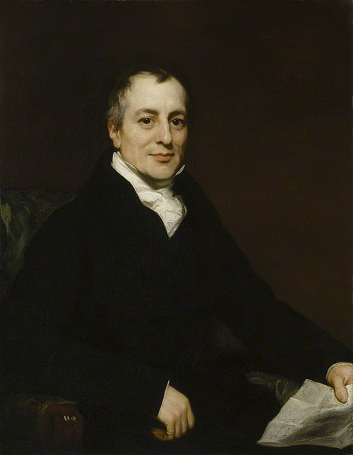
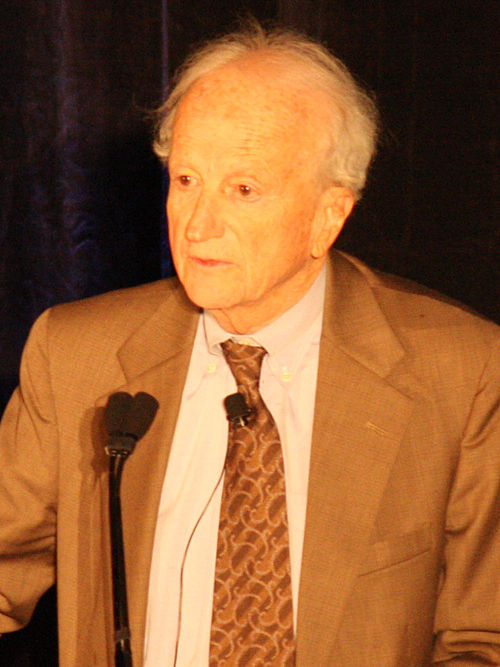

Ressourcer
Økonomi er studiet af, hvordan samfund forvalter deres knappe ressourcer. Inden for økonomi skelner man typisk mellem to hovedgrene: mikroøkonomi og makroøkonomi. Selvom de begge studerer økonomiske fænomener, anlægger de forskellige perspektiver.
Mikroøkonomi vs. Makroøkonomi
- Mikroøkonomi: Fokuserer på individuelle økonomiske aktører – husholdninger, virksomheder og markeder. Den undersøger, hvordan disse aktører træffer beslutninger under knaphed, og hvordan deres interaktioner påvirker priser, produktion og fordeling af goder og tjenester.
- Eksempel: Hvorfor stiger prisen på kaffe? Hvordan påvirker en skat på cigaretter forbrugernes adfærd? Hvilke beslutninger træffer en virksomhed for at maksimere profit?
- Makroøkonomi: Ser på økonomien som helhed. Den analyserer aggregerede fænomener som nationalindkomst, inflation, arbejdsløshed og økonomisk vækst. Makroøkonomi forsøger at forstå, hvordan regeringer og centralbanker kan påvirke den samlede økonomi gennem finans- og pengepolitik.
- Eksempel: Hvad forårsager inflation? Hvordan kan regeringen reducere arbejdsløsheden? Hvilke faktorer driver den samlede økonomiske vækst i et land?
I dette kapitel ser vi på:
- Hvad er ressourceknaphed, og hvorfor er det centralt i økonomi?
- Alternativomkostninger: Prisen for det fravalgte valg
- Komparative fordele: Hvorfor specialisering og handel betaler sig
- Produktionsmulighedskurven: En visuel repræsentation af knaphed
- Reelle eksempler på økonomiske beslutninger i hverdagen
Lyt til podcast om kapitlet
Ressourceknaphed og økonomiske valg
Ressourceknaphed er det fundamentale problem i økonomi. Det betyder, at der er begrænsede ressourcer til at opfylde ubegrænsede ønsker og behov. Dette tvinger os til at træffe valg. Uden knaphed ville der ikke være behov for økonomi, da alle ønsker kunne opfyldes.
Eksempler på knappe ressourcer:
- Tid: En studerende har kun 24 timer i døgnet til studier, arbejde, søvn og fritid. Valget om at bruge mere tid på ét område betyder mindre tid til et andet.
- Penge: En familie har et begrænset budget til mad, bolig, transport og underholdning. Hver krone brugt på én vare er en krone, der ikke kan bruges på en anden.
- Naturressourcer: Jord, vand, olie og mineraler er alle begrænsede. F.eks. er adgangen til rent drikkevand en kritisk knap ressource i mange dele af verden.
- Arbejdskraft: Antallet af kvalificerede medarbejdere er ikke uendeligt. En virksomhed kan ikke ansætte ubegrænset mange ingeniører eller sygeplejersker.
- Halvledere (Chips): Den globale chipmangel i 2020'erne er et fremragende eksempel på knaphed. Virksomheder som AMD, Intel og Nvidia kæmpede med at producere nok chips til at imødekomme efterspørgslen fra bilindustrien, elektronikproducenter og datacentre. Denne knaphed førte til højere priser, forsinkelser i produktionen og en genovervejelse af globale forsyningskæder.
Når ressourcer er knappe, må vi prioritere. Hvert valg indebærer et fravalg, og det er her begrebet alternativomkostning kommer ind i billedet.
Alternativomkostninger: Prisen for det fravalgte
Alternativomkostningen er værdien af det bedste alternativ, man giver afkald på, når man træffer et valg. Det er ikke kun en monetær omkostning, men kan også være tid, oplevelser eller andre fordele.
| Valg | Direkte omkostning | Alternativomkostning (det fravalgte) | Eksempel fra virkeligheden |
|---|---|---|---|
| Gå i biografen | Billetpris, transport | Tid til studier, arbejde, socialt samvær | En studerende vælger at se en film i stedet for at læse til eksamen. Alternativomkostningen er den potentielt højere karakter. |
| Købe en ny bil | Bilens pris, forsikring, benzin | Ferie, opsparing, investering i bolig | En familie bruger opsparingen på en ny bil i stedet for en drømmerejse. Alternativomkostningen er rejsen. |
| Bygge en ny motorvej | Byggeudgifter, ekspropriation | Investering i offentlig transport, hospitaler, skoler | Regeringen prioriterer motorvejsbyggeri frem for opgradering af jernbanenettet. Alternativomkostningen er forbedret offentlig transport. |
| Starte egen virksomhed | Kapital, tid, risiko | Fast løn, sikkerhed, fritid | En person siger sit job op for at starte en startup. Alternativomkostningen er den faste indkomst og tryghed. |
Forståelse af alternativomkostninger er afgørende for at træffe rationelle økonomiske beslutninger.
Komparative fordele: Hvorfor specialisering betaler sig
Komparative fordele opstår, når en person, virksomhed eller et land kan producere en vare eller service til en lavere alternativomkostning end en anden. Dette er grundlaget for specialisering og international handel.
David Ricardo og teorien om komparative fordele
Teorien om komparative fordele blev først systematisk formuleret af den britiske økonom David Ricardo (1772-1823). Han viste, at selvom et land er bedre til at producere alle varer, kan det stadig drage fordel af handel ved at specialisere sig i de varer, hvor dets alternativomkostninger er lavest.
Absolutte fordele vs. Komparative fordele
- Absolut fordel: En aktør (person, virksomhed, land) har en absolut fordel, hvis den kan producere en vare eller service mere effektivt (med færre ressourcer eller på kortere tid) end en anden aktør. Adam Smith introducerede dette koncept.
- Komparativ fordel: En aktør har en komparativ fordel, hvis den kan producere en vare eller service til en lavere alternativomkostning end en anden aktør. Dette er Ricardos bidrag, som viser, at handel kan være gensidigt fordelagtig, selv hvis den ene part har en absolut fordel i alt.
Det er vigtigt at forstå, at selvom et land har en absolut fordel i produktionen af alle varer, kan det stadig drage fordel af handel ved at specialisere sig i den vare, hvor det har den største absolutte fordel, eller rettere, den laveste alternativomkostning (komparativ fordel).
Eksempel 1: Portugal og England (Vin og Klæde)
Lad os uddybe Ricardos eksempel med konkrete tal for at illustrere komparative fordele. Antag, at det tager følgende antal arbejdstimer at producere en enhed af vin eller klæde:
| Land | 1 enhed Vin (arbejdstimer) | 1 enhed Klæde (arbejdstimer) |
|---|---|---|
| Portugal | 80 | 90 |
| England | 120 | 100 |
Her har Portugal en absolut fordel i produktionen af både vin (80 timer vs. 120 timer) og klæde (90 timer vs. 100 timer), da de bruger færre arbejdstimer på begge dele. Men lad os se på alternativomkostningerne:
- Portugals alternativomkostning:
- 1 enhed Vin = 80/90 = 0.89 enheder Klæde
- 1 enhed Klæde = 90/80 = 1.125 enheder Vin
- Englands alternativomkostning:
- 1 enhed Vin = 120/100 = 1.2 enheder Klæde
- 1 enhed Klæde = 100/120 = 0.83 enheder Vin
Portugal har en lavere alternativomkostning ved at producere vin (0.89 enheder klæde vs. Englands 1.2 enheder klæde). England har en lavere alternativomkostning ved at producere klæde (0.83 enheder vin vs. Portugals 1.125 enheder vin). Derfor har Portugal en komparativ fordel i vin, og England har en komparativ fordel i klæde. Begge lande vil drage fordel af at specialisere sig og handle.
Produktion uden handel (eksempel)
| Land | Vin (enheder) | Klæde (enheder) |
|---|---|---|
| Portugal | 5 | 5 |
| England | 2 | 8 |
| Total | 7 | 13 |
Produktion med specialisering
| Land | Vin (enheder) | Klæde (enheder) |
|---|---|---|
| Portugal | 12.5 (specialiserer sig) | 0 |
| England | 0 | 10 (specialiserer sig) |
| Total | 12.5 | 10 |
Ved specialisering produceres der mere vin (12.5 vs 7) og mindre klæde (10 vs 13). Dette viser, at den samlede produktion kan ændre sig, men det vigtigste er, at handel muliggør et højere forbrug for begge lande.
Forbrug med handel (eksempel)
| Land | Vin (enheder) | Klæde (enheder) | Gevinst ved handel (Vin, Klæde) |
|---|---|---|---|
| Portugal | 6 | 6 | (+1, +1) |
| England | 3 | 9 | (+1, +1) |
| Total | 9 | 15 | (+2, +2) |
I dette eksempel handler Portugal 6.5 enheder vin for 6 enheder klæde med England. Begge lande ender med at forbruge mere af begge varer, end de kunne uden handel.
Eksempel 2: Landmand og bager
- Landmand: Kan producere 10 kg korn eller 5 kg brød på en dag.
- Bager: Kan producere 2 kg korn eller 8 kg brød på en dag.
Lad os beregne alternativomkostningerne for landmanden og bageren:
- Landmandens alternativomkostning:
- 1 kg korn = 5/10 = 0.5 kg brød
- 1 kg brød = 10/5 = 2 kg korn
- Bagerens alternativomkostning:
- 1 kg korn = 8/2 = 4 kg brød
- 1 kg brød = 2/8 = 0.25 kg korn
Landmanden har en lavere alternativomkostning ved at producere korn (0.5 kg brød vs. bagerens 4 kg brød). Bageren har en lavere alternativomkostning ved at producere brød (0.25 kg korn vs. landmandens 2 kg korn). Derfor har landmanden en komparativ fordel i korn, og bageren har en komparativ fordel i brød. Ved at specialisere sig (landmanden producerer korn, bageren producerer brød) og handle, kan de begge opnå mere, end hvis de forsøgte at producere begge dele selv.
Produktion uden handel (eksempel)
| Aktør | Korn (kg) | Brød (kg) |
|---|---|---|
| Landmand | 5 | 2.5 |
| Bager | 1 | 4 |
| Total | 6 | 6.5 |
Produktion med specialisering
| Aktør | Korn (kg) | Brød (kg) |
|---|---|---|
| Landmand | 10 (specialiserer sig) | 0 |
| Bager | 0 | 8 (specialiserer sig) |
| Total | 10 | 8 |
Ved specialisering produceres der mere korn (10 kg vs 6 kg) og mere brød (8 kg vs 6.5 kg). Dette viser, at den samlede produktion øges, og handel muliggør et højere forbrug for begge parter.
Forbrug med handel (eksempel)
| Aktør | Korn (kg) | Brød (kg) | Gevinst ved handel (Korn, Brød) |
|---|---|---|---|
| Landmand | 6 | 3 | (+1, +0.5) |
| Bager | 4 | 5 | (+3, +1) |
| Total | 10 | 8 | (+4, +1.5) |
I dette eksempel handler landmanden 4 kg korn for 3 kg brød med bageren. Begge parter ender med at forbruge mere af begge varer, end de kunne uden handel.
Figur 2.1: Landmandens og bagerens produktionskapacitet.
Produktionsmulighedskurven (PPF)
Produktionsmulighedskurven (Production Possibilities Frontier - PPF) illustrerer de maksimale kombinationer af to varer, der kan produceres med de tilgængelige ressourcer og teknologi. Den viser også alternativomkostningerne ved at producere mere af den ene vare på bekostning af den anden.
Karakteristika ved PPF:
- Nedadgående hældning: Afspejler knaphed og alternativomkostninger. For at producere mere af én vare, må man producere mindre af en anden.
- Konkav form (buer udad): Illustrerer loven om stigende alternativomkostninger. Jo mere man producerer af en vare, desto større er alternativomkostningen for at producere yderligere enheder. Dette skyldes, at ressourcer ikke er lige velegnede til alle former for produktion.
- Punkter på kurven: Effektiv produktion (alle ressourcer udnyttes fuldt ud).
- Punkter inden for kurven: Ineffektiv produktion (ressourcer udnyttes ikke fuldt ud).
- Punkter uden for kurven: Uopnåelige med nuværende ressourcer og teknologi.
Den konkave form (buer udad) af PPF illustrerer loven om stigende alternativomkostninger. Dette betyder, at jo mere man producerer af én vare, desto større er alternativomkostningen for at producere yderligere enheder af den vare. Årsagen er, at ressourcer ikke er lige velegnede til alle former for produktion.
Når man flytter ressourcer fra produktionen af én vare til en anden, vil man først flytte de ressourcer, der er bedst egnet til den nye produktion.
Efterhånden som man producerer mere af den nye vare, skal man begynde at bruge ressourcer, der er mindre velegnede, hvilket resulterer i en stadig større reduktion i produktionen af den oprindelige vare.
Medarbejere med forskellige færdigheder, maskiner designet til specifikke opgaver og jord med varierende frugtbarhed er eksempler på ressourcer, der ikke er lige velegnede til alle former for produktion.
Figur 2.2: Produktionsmulighedskurven (PPF).
| Produktionsmulighed | Vare X | Vare Y | Samlet Produktion (X + Y) | Koordinater (X, Y) |
|---|---|---|---|---|
| A | 0 | 10 | 10 | (0, 10) |
| B | 1 | 9.9 | 10.9 | (1, 9.9) |
| C | 2 | 9.6 | 11.6 | (2, 9.6) |
| D | 3 | 9.1 | 12.1 | (3, 9.1) |
| E | 4 | 8.4 | 12.4 | (4, 8.4) |
| F | 5 | 7.5 | 12.5 | (5, 7.5) |
| G | 6 | 6.4 | 12.4 | (6, 6.4) |
| H | 7 | 5.1 | 12.1 | (7, 5.1) |
| I | 8 | 3.6 | 11.6 | (8, 3.6) |
| J | 9 | 1.9 | 10.9 | (9, 1.9) |
| K | 10 | 0 | 10 | (10, 0) |
I tabellen ovenfor repræsenterer hver række en mulig kombination af produktion af to varer, Vare X og Vare Y, baseret på en hypotetisk produktionsmulighedskurve (PPF). Hver produktionsmulighed (A til K) viser, hvor meget af hver vare der kan produceres, når alle ressourcer udnyttes fuldt ud. Bemærk den samlede produktion er højere når ikke alle ressourcer bruges på én vare, hvilket illustrerer fordelene ved diversificering og specialisering i produktionen.
Sunk Costs: Når fortiden spøger
En "sunk cost" er en omkostning, der allerede er afholdt og ikke kan genvindes. Økonomisk rationelle beslutninger bør ignorere sunk costs, da de ikke kan ændres og derfor ikke er relevante for fremtidige valg.
| Eksempel | Beskrivelse af Sunk Cost | Rationel beslutning |
|---|---|---|
| Biografbillet |
Du har købt en biografbillet til 100 kr. Efter 10 minutter opdager du, at filmen er kedelig. De 100 kr er en sunk cost. |
Beslutningen om at blive eller gå bør kun baseres på, om du får mere ud af at blive (selvom det er kedeligt) eller at gå og gøre noget andet. |
| Produktudvikling |
En virksomhed har brugt 5 millioner kr på at udvikle et nyt produkt. Testresultaterne viser, at produktet ikke er konkurrencedygtigt. De 5 millioner kr er en sunk cost. |
Virksomheden bør ikke fortsætte med at producere produktet blot for at "tjene investeringen hjem", men i stedet fokusere på fremtidige omkostninger og indtægter. |
| Uddannelse |
Du har brugt 3 år på en uddannelse, som du nu finder kedelig og irrelevant. De 3 år er en sunk cost. |
Beslutningen om at fortsætte eller skifte uddannelse bør baseres på dine fremtidige muligheder og præferencer, ikke på den tid du allerede har investeret. |
| Concorde-projektet |
Storbritannien og Frankrig investerede massivt i udviklingen af Concorde-flyet i 1960'erne og 70'erne. Selvom det undervejs blev klart, at projektet aldrig ville blive økonomisk rentabelt, fortsatte begge regeringer med at finansiere det i årevis. |
De allerede afholdte udviklingsomkostninger (sunk costs) blev fejlagtigt brugt som argument for at fortsætte, i et forsøg på at "redde" investeringen. |
| Storebæltsbroen |
Danmark investerede milliarder i at bygge Storebæltsbroen. Selvom der var debat om de samlede omkostninger og potentielle alternative transportløsninger, var de allerede afholdte udgifter til planlægning og de tidlige byggefaser sunk costs, som ikke kunne genvindes. |
Beslutningen om at færdiggøre broen blev truffet ud fra en vurdering af fremtidige fordele og omkostninger, uafhængigt af de allerede tabte penge. |
| Netflix's investering i indhold |
Netflix investerer milliarder i at producere originalt indhold. Hvis en serie eller film viser sig at være upopulær, er produktionsomkostningerne en sunk cost. |
Netflix's beslutning om at fortsætte med at promovere den eller ej, eller at producere en efterfølger, bør udelukkende baseres på forventede fremtidige indtægter og seerengagement, ikke på de penge, der allerede er brugt på den oprindelige produktion. |
| Aktieinvestering |
Du har investeret 50.000 kr. i en tech-aktie, som nu kun er 25.000 kr. værd. Værditabet på 25.000 kr. er en sunk cost. |
Vurder aktien ud fra dens fremtidige potentiale. Hvis en anden aktie (f.eks. Tech-aktie B) har bedre vækstmuligheder, bør du overveje at sælge Tech-aktie A og investere i Tech-aktie B, uanset det tidligere tab. |
De lavthængende frugters princip - fra teori til praksis
Dette princip illustrerer, hvordan man bør prioritere indsatser, hvor man får mest værdi for mindst indsats først. Begrebet kommer fra frugtplukning, hvor man naturligt starter med de lettest tilgængelige frugter.
Klassisk eksempel: Æbleplukning
| Fase | Indsats | Udbytte | Effektivitet |
|---|---|---|---|
| Fase 1 | Let (øjenhøjde) | 25 kg / 30 min | Høj |
| Fase 2 | Medium (lille stige) | 25 kg / 45 min | Medium |
| Fase 3 | Svær (høj stige) | 25 kg / 60 min | Lav |
Energioptimering i moderne virksomheder
| Tiltag | Investering | Årlig besparelse | Afkast |
|---|---|---|---|
| LED-belysning | 100.000 kr | 50.000 kr | 50% |
| Varmepumpe | 300.000 kr | 75.000 kr | 25% |
| Solceller | 1.000.000 kr | 150.000 kr | 15% |
Digital Transformation Journey
| Fase | Kompleksitet | Tid til værdi | Impact |
|---|---|---|---|
| E-mail automation | Lav | 1-2 uger | 15% |
| CRM implementering | Medium | 2-3 måneder | 30% |
| Fuld ERP integration | Høj | 6-12 måneder | 50% |
Bæredygtig ressourceanvendelse og ESG
Moderne ressourceanvendelse handler ikke kun om økonomisk effektivitet, men også om langsigtet bæredygtighed og samfundsansvar.
| Tiltag | Implementering | Initial cost | Langsigtet værdi |
|---|---|---|---|
| Affaldssortering | 1 måned | 50.000 kr | Medium |
| Energioptimering | 3 måneder | 200.000 kr | Høj |
| CO2-neutralitet | 24 måneder | 5.000.000 kr | Meget høj |
Vigtige økonomer og deres bidrag
Udover David Ricardo har mange andre økonomer bidraget til vores forståelse af mikroøkonomiske principper bl.a.:
| Økonom | Periode | Fødested/Bopæl | Vigtigste bidrag (relevant for mikroøkonomi) | Billede |
|---|---|---|---|---|
| David Ricardo | 1772-1823 | Født i London, England. Boede og arbejdede primært i England. |
Teorien om komparative fordele blev først systematisk formuleret af den britiske økonom David Ricardo (1772-1823) i hans værk "On the Principles of Political Economy and Taxation" fra 1817. Ricardo udvidede Adam Smiths idéer om absolutte fordele ved at vise, at selvom et land er bedre (mere produktivt) til at producere alle varer (har en absolut fordel i alt), kan det stadig drage fordel af handel ved at specialisere sig i de varer, hvor det har en komparativ fordel – altså hvor dets alternativomkostninger er lavest. Ricardos klassiske eksempel involverede Portugal og England, der handlede vin og klæde. Selvom Portugal kunne producere begge dele mere effektivt, var Portugals komparative fordel i vin, og Englands i klæde. Ved at specialisere sig og handle kunne begge lande opnå en større samlet produktion og forbrug. |
 |
| Adam Smith | 1723-1790 | Født i Kirkcaldy, Skotland. Boede og arbejdede primært i Skotland. |
Ofte betragtet som faderen til moderne økonomi. I sit hovedværk "The Wealth of Nations" (1776) introducerede han begrebet "den usynlige hånd", der beskriver, hvordan individer, der handler ud fra egeninteresse i et frit marked, uforvarende kan bidrage til samfundets samlede velstand. Han argumenterede for frihandel og specialisering baseret på absolutte fordele, hvor lande producerer de varer, de er mest effektive til. Smiths tanker lagde grundlaget for klassisk økonomi og markedsøkonomiens principper. |
 |
| Alfred Marshall | 1842-1924 | Født i Bermondsey, London, England. Boede og arbejdede primært i England, især Cambridge. |
En central figur i udviklingen af neoklassisk økonomi. Hans banebrydende værk "Principles of Economics" (1890) forenede klassisk økonomi med nye marginalistiske ideer. Dette betød, at han kombinerede elementer fra den klassiske skole (fokus på udbud, produktionsomkostninger og langsigtede perspektiver) med de nye marginalistiske tanker (fokus på efterspørgsel, nytte og kortsigtede beslutninger baseret på "marginaler" – altså effekten af den næste enhed). Marshall introducerede og formaliserede begreber som:
De nye marginalistiske ideer, som Marshall integrerede, handlede om at analysere økonomiske beslutninger ud fra "marginaler". Dette indebærer at se på effekten af den sidste enhed af en vare eller service. For eksempel: Disse ideer hjalp med at forklare, hvordan priser dannes på markeder ud fra både udbud (omkostninger) og efterspørgsel (nytte), og hvordan individer og virksomheder træffer optimale beslutninger ved at sammenligne marginale fordele og omkostninger. Han udviklede også ideen om "ceteris paribus" (alt andet lige) for at isolere effekten af enkelte variabler i økonomisk analyse, hvilket er fundamentalt for moderne mikroøkonomi. |
 |
| Paul Samuelson | 1915-2009 | Født i Gary, Indiana, USA. Boede og arbejdede primært i USA, især ved MIT. |
En amerikansk Nobelprismodtager og en af de mest indflydelsesrige økonomer i det 20. århundrede. Hans lærebog "Economics" (1948) blev en standard inden for økonomiundervisning og populariserede den neoklassiske syntese, der integrerede keynesiansk makroøkonomi med neoklassisk mikroøkonomi. Samuelson bidrog også betydeligt til teorier om:
Han var en stærk fortaler for brugen af matematik i økonomisk analyse. |
 |
| John Maynard Keynes | 1883-1946 | Født i Cambridge, England. Boede og arbejdede primært i England. |
En britisk økonom, hvis ideer revolutionerede makroøkonomien og havde stor indflydelse på regeringers økonomiske politik. I sit værk "The General Theory of Employment, Interest and Money" (1936) argumenterede han for, at markedsøkonomier ikke automatisk finder fuld beskæftigelse, og at staten kan og bør intervenere gennem finanspolitik (offentlige udgifter og skatter) for at stabilisere økonomien under kriser. Selvom hans primære fokus var makroøkonomi, har hans tanker indirekte påvirket mikroøkonomiske modeller for forbrugeradfærd og investeringsbeslutninger. |
 |
| Milton Friedman | 1912-2006 | Født i Brooklyn, New York, USA. Boede og arbejdede primært i USA, især ved University of Chicago. |
En amerikansk Nobelprismodtager og en ledende skikkelse inden for monetarismen, en økonomisk skole, der understreger pengemængdens rolle i økonomien. Friedman argumenterede for, at inflation primært er et monetært fænomen, og at centralbanker bør fokusere på at kontrollere pengemængden for at opnå prisstabilitet. Han var en stærk fortaler for:
Hans arbejde har haft stor indflydelse på både mikroøkonomisk tænkning om rationelle forventninger og makroøkonomisk politik. |
|
| Gary Becker | 1930-2014 | Født i Pottsville, Pennsylvania, USA. Boede og arbejdede primært i USA, især ved University of Chicago. |
En amerikansk Nobelprismodtager, kendt for at anvende økonomisk analyse på en bred vifte af menneskelig adfærd og sociale fænomener, der traditionelt ikke blev betragtet som økonomiske. Han analyserede emner som:
...ud fra et rationelt valg-perspektiv, hvor individer maksimerer deres nytte under knappe ressourcer. Hans arbejde har udvidet mikroøkonomiens anvendelsesområde betydeligt og vist dens relevans for forståelsen af sociale strukturer. |
 |
Historiske eksempler på komparative fordele
Teorien om komparative fordele, oprindeligt formuleret af David Ricardo, har været en drivkraft bag international handel i århundreder. Her er nogle eksempler på, hvordan lande har udnyttet deres komparative fordele:
| Land/Region | Komparativ fordel | Historisk kontekst/Eksempel |
|---|---|---|
| Storbritannien | Tekstilproduktion |
Under den industrielle revolution (ca. 1760-1840) opnåede Storbritannien en markant komparativ fordel inden for tekstilproduktion, især bomuld. Dette skyldtes en kombination af faktorer:
Storbritannien kunne producere tekstiler langt mere effektivt end andre lande og eksporterede dem globalt i bytte for fødevarer og andre råvarer, hvilket drev en enorm økonomisk vækst. |
| Portugal | Vinproduktion |
David Ricardos klassiske eksempel fra 1817 illustrerede komparative fordele mellem Portugal og England. Portugal havde en naturlig fordel i vinproduktion på grund af sit klima og jordbund, hvilket resulterede i lavere alternativomkostninger for vin sammenlignet med England. Omvendt havde England en komparativ fordel i klædeproduktion. Ved at Portugal specialiserede sig i vin og England i klæde, og derefter handlede med hinanden, kunne begge lande forbruge mere af begge varer, end de kunne have produceret alene. Dette demonstrerede, at selvom et land var mere effektivt til alt (absolut fordel), var specialisering baseret på komparative fordele stadig gensidigt fordelagtig. |
| Japan | Elektronik og biler |
Efter Anden Verdenskrig fokuserede Japan på at genopbygge sin industri med en stærk vægt på innovation, kvalitet og effektivitet. De udviklede en komparativ fordel inden for produktion af:
Gennem avancerede produktionsmetoder som "lean manufacturing" og en dedikation til konstant forbedring (Kaizen) kunne japanske virksomheder producere højkvalitetsprodukter til konkurrencedygtige priser. Dette gjorde Japan til en global eksportmagt og et forbillede for industriel udvikling. |
| Kina | Masseproduktion af forbrugsvarer |
I de seneste årtier har Kina gennemgået en bemærkelsesværdig økonomisk transformation og udviklet en enorm komparativ fordel inden for masseproduktion af en bred vifte af forbrugsvarer, fra tøj og legetøj til elektronik og maskiner. Denne fordel er drevet af:
Kina er blevet "verdens fabrik" og eksporterer varer til hele verden, hvilket har løftet millioner ud af fattigdom og omformet globale forsyningskæder. |
| Schweiz | Finansielle tjenester og præcisionsinstrumenter |
Schweiz har historisk set udviklet en stærk komparativ fordel inden for:
Dette skyldes en kombination af:
Disse sektorer bidrager betydeligt til Schweiz' økonomi og eksport, selvom landet har begrænsede naturressourcer. |
| Saudi-Arabien | Olieproduktion |
Saudi-Arabien besidder nogle af verdens største oliereserver og har en komparativ fordel i olieproduktion på grund af lave udvindingsomkostninger. Landet kan producere råolie langt billigere end de fleste andre nationer. Denne specialisering har gjort Saudi-Arabien til en af verdens største olieeksportører og en nøgleaktør på det globale energimarked, hvilket har finansieret landets udvikling og velstand. |
| Danmark | Vindenergi og design |
Danmark har udviklet en komparativ fordel inden for:
Dette skyldes en kombination af:
Disse sektorer er vigtige eksportområder for Danmark og afspejler landets evne til at specialisere sig i nicheområder med høj værditilvækst. |
Handelshindringer og deres konsekvenser
Selvom frihandel baseret på komparative fordele ofte fører til økonomisk vækst og velstand, implementerer lande ofte handelshindringer for at beskytte indenlandsk industri, opretholde nationale sikkerhedsinteresser eller reagere på uretfærdig handelspraksis. Disse hindringer kan dog have uønskede konsekvenser.
Handelshindringer forstyrrer den frie bevægelighed af varer og tjenester mellem lande, hvilket kan føre til højere priser for forbrugere, reduceret udvalg, ineffektiv ressourceallokering og potentielt handelskrig mellem nationer. De kan også hæmme innovation og økonomisk vækst på lang sigt ved at beskytte ineffektive indenlandske industrier mod international konkurrence.
| Type handelshindring | Beskrivelse | Eksempel fra virkeligheden | Økonomisk konsekvens |
|---|---|---|---|
| Told (Tariffer) | En skat på importerede varer, der gør dem dyrere for forbrugerne og mere konkurrencedygtige for indenlandske producenter. |
USA under Trump-administrationen:
|
|
| Importkvoter | En begrænsning på mængden af en vare, der kan importeres over en given periode. |
Historiske kvoter på tekstiler:
|
|
| Frivillige Eksportrestriktioner (VER) | En aftale mellem et importerende og et eksporterende land, hvor det eksporterende land frivilligt begrænser sin eksport for at undgå strengere handelshindringer. |
Japanske biler til USA i 1980'erne:
|
|
| Subsidier | Statsstøtte til indenlandske producenter for at gøre deres varer billigere og mere konkurrencedygtige, både nationalt og internationalt. |
EU's landbrugsstøtte:
|
|
| Tekniske handelshindringer | Regler og standarder (f.eks. sikkerhed, sundhed, miljø), der kan gøre det svært for udenlandske varer at komme ind på et marked. |
Frankrigs TV-industri:
|
|
| Sanitære Foranstaltninger | Regler og standarder for fødevaresikkerhed, dyre- og plantesundhed, der kan begrænser import af landbrugsprodukter. |
Ruslands importforbud mod EU-fødevarer:
|
|
| Anti-dumping told | En told, der pålægges importerede varer, som sælges til en pris under deres normale værdi (dumping) for at beskytte indenlandske industrier mod unfair konkurrence. |
EU's anti-dumping told på kinesisk stål:
|
|
| Embargoer | Et totalt forbud mod handel med et specifikt land eller for specifikke varer, ofte af politiske årsager. |
USA's embargo mod Cuba:
|
|
| Valutamanipulation | En regering griber ind på valutamarkedet for at devaluere sin valuta, hvilket gør eksport billigere og import dyrere. |
Kinas valutapolitik:
|
|
| Licenskrav | Krav om, at importører skal have en særlig licens for at importere visse varer, hvilket kan begrænse mængden eller typen af importerede varer. |
Indiens importlicenser:
|
|
| Lokale indholdskrav | Krav om, at en vis procentdel af et produkt skal produceres indenlandsk for at blive solgt på markedet. |
Brasiliens bilindustri:
|
|